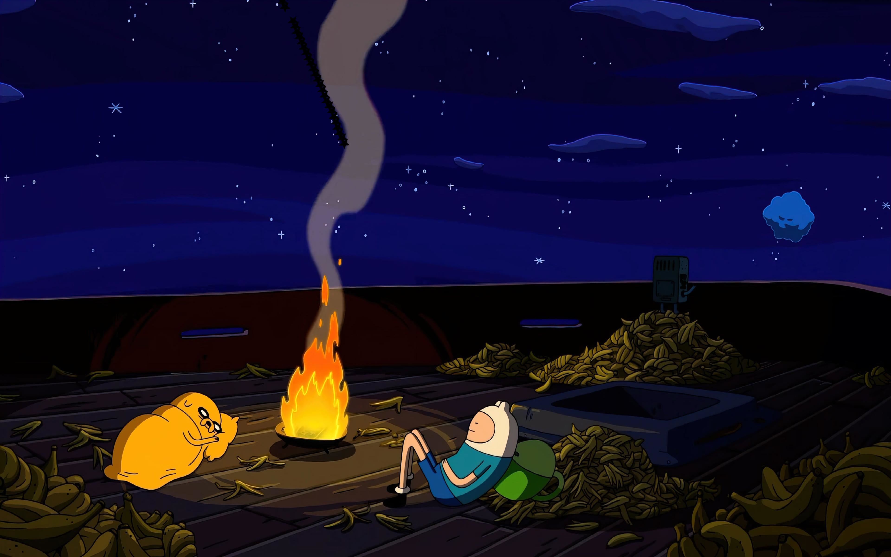

🌐 Mi portafolio de Trabajo.
📸 Foto1. 📸 Foto2. medios video
Yo soy Gustavo Adrian Rojas Lorenzana, estudiante de Arte y Comunicaciòn Digitales en la Universidad Autonoma Metropolitana, tengo 21 años y actualmente me enfoco en crecer como persona mientras cumplo mis responsabilidades académicas en tiempo y forma. Me apasionan el diseño, el arte y la instalación profesional de audio en autos, áreas en las que busco seguir aprendiendo y mejorando constantemente. Mi principal meta este año es desarrollarme personalmente, fortalecer mis hábitos y mantener disciplina en mis estudios. Quiero avanzar con equilibrio, siendo responsable, creativo y constante, construyendo una versión más madura y comprometida de mí mismo sin perder mi esencia y motivación diaria y propósito personal.